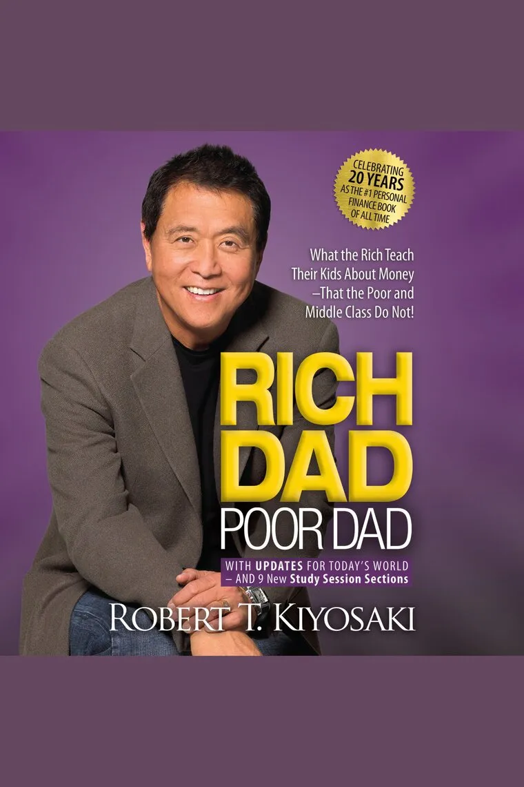
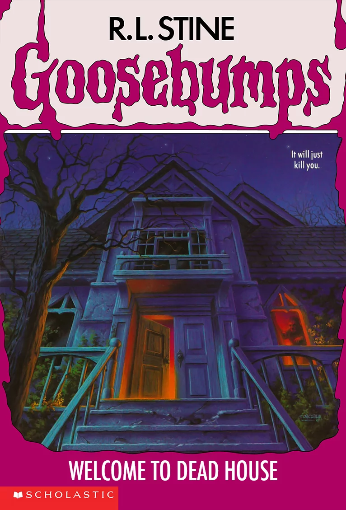

REVIEWS OF THE BOOK
1. Rich Dad Poor Dad
|  |
Summary:The story begins with the author as a young boy, observing the contrasting financial mindsets and behaviors of his two dads. His poor dad, who held a high position in education, emphasized the importance of academic success, job security, and living within one's means. On the other hand, his rich dad, a successful entrepreneur, believed in building assets, investing wisely, and acquiring financial knowledge. It describes how rich dad teaches the author and his friend finances by using actual life situations. Review:Rich Dad, Poor Dad is one of the most famous books in all of personal finance. Though it came out in 1997, it’s still the top #3 Best Seller on Amazon in 2024. Many of today’s most popular finance gurus cite it as the inspiration for their success. I wanted to see what all the hype was about, so I grabbed a copy of the book, tore through it (it’s a pretty quick read), and compiled my thoughts for you here. This Rich Dad, Poor Dad review will take a look at Robert Kiyosaki’s real lessons in this book (not just the ones he uses as names for his chapters) and help you decide whether it’s worth reading. |
2. Your Name
 |
Summary:The story begins with the author as a young boy, observing the contrasting financial mindsets and behaviors of his two dads. His poor dad, who held a high position in education, emphasized the importance of academic success, job security, and living within one's means. On the other hand, his rich dad, a successful entrepreneur, believed in building assets, investing wisely, and acquiring financial knowledge. It describes how rich dad teaches the author and his friend finances by using actual life situations. Review:Mitsuha, a high school girl living in a rural town deep in the mountains, has a dream that she is a boy living an unfamiliar life in Tokyo. Taki, a high school boy living in Tokyo, dreams that he is a girl living in the mountains. As they realize they are changing places, their encounter sets the cogs of fate into motion. The light novel is written by director Makoto Shinkai of the animated film Your Name. Your Name has held a special place in my heart ever since my lovely friend Hannah introduced it to me. In fact, before I start, I’d like to point out her review of the film. It really is something special. |
3. Welcome to the Dead house
|  |
Summary:The plot follows Amanda and Josh Benson, who move with their parents into a creepy old house located in the strange town of Dark Falls where people are unlike any they have known before. The original cover illustration by Tim Jacobus features an old house at night, with the front door slightly ajar, and a strange figure illuminated in the window. Subsequent editions differed from one release to the next; while an early 2000s re-release of the title featured a more digitally-rendered version of Jacobus's haunted house image, the British special edition was light gray-blue in colour and featured an image of human skulls in a cemetery, an attempt to market the edition to more mature demographics who saw the Goosebumps series as wholly for children. A novelization of the 1990s Canadian TV adaptation had also been scheduled under Scholastic's Goosebumps Presents TV novelization spin-off series, but the series completed its final aired season before the publication contract could be fulfilled. Review:goosebumps is a good but scary book series there about 62 or more in the series depends what series it is my favourite ones in the series are little shop of hamsters, monster blood, why I’m afraid of bees, beast of the east, the 12 screams of Christmas, a night in terror tower, and the girl who cried monster some of the books in the series are scarier than others especially were wolf of fever swamp where it talks about animals being killed but since there kid books there ok for old enough readers |